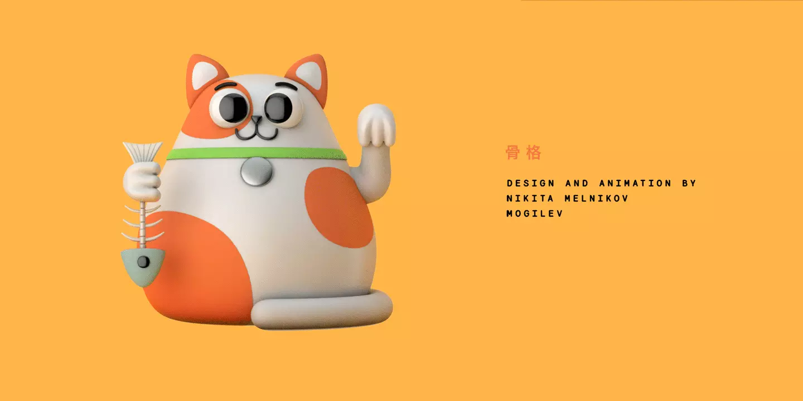
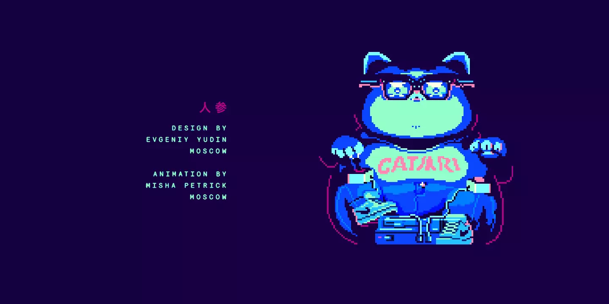

俄罗斯工作室的26只招财猫，好运与财富快来呀~
治愈 动画 喵星人 日本宠物食品协会 Petrick studio
日本人喜欢猫不是秘密，但你知道日本每年的2月22日，都有一个“猫之日”吗？
因为在日语中，“2”的发音很像“喵（nya）”，所以1987年，由日本宠物食品协会将这一天定为“猫之日”，以此感谢猫猫们从喵星来到了地球，并大发慈悲和愚蠢的人类和平共处。
大概是因为喜爱猫猫是全世界的共识，即使是战斗民族也不能例外。俄罗斯莫斯科动画工作室Petrick studio就为“猫之日”发起的了一个可爱的项目：他们邀请了来自世界各地的26位艺术家，请他们分享自己心目中的日本招财猫，然后工作室协助他们制作成动画。
五湖四海的艺术家为自己笔下的猫猫赋予了截然不同的个性色彩，有超级英雄，有黑帮大佬，有运动系，有恶魔，也有毛茸茸的小天使或安静坐禅的大师猫，充分展示了喵星人的特质。
猫之日已经过去了好多天，为什么要今天发？
因为猫猫永远都能让我们快乐，不是吗？